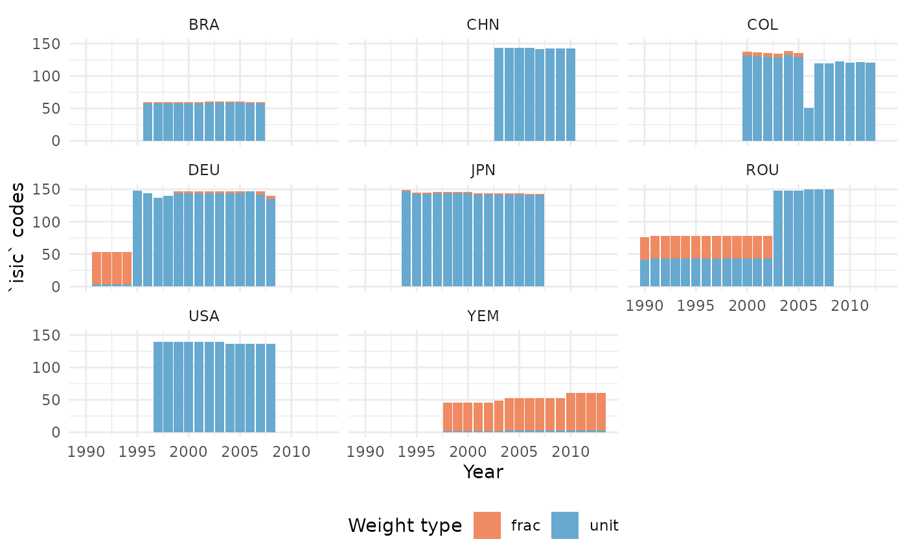
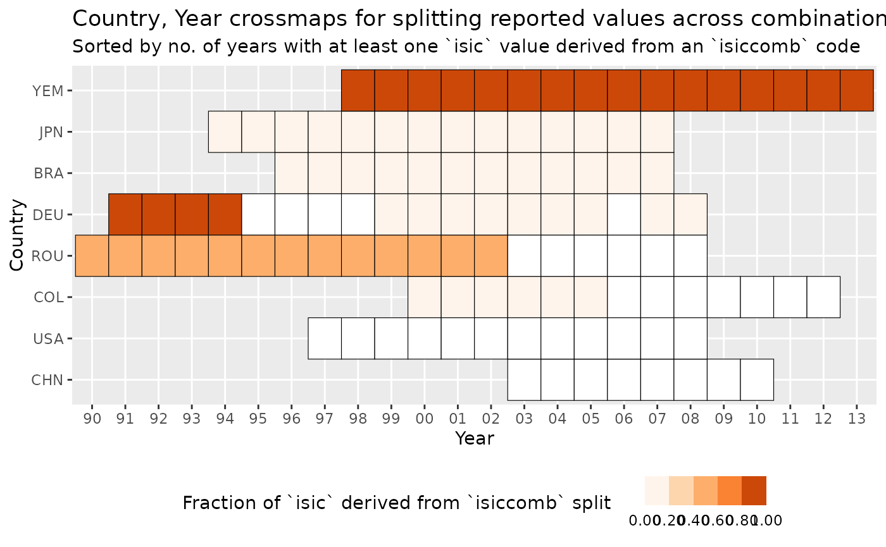
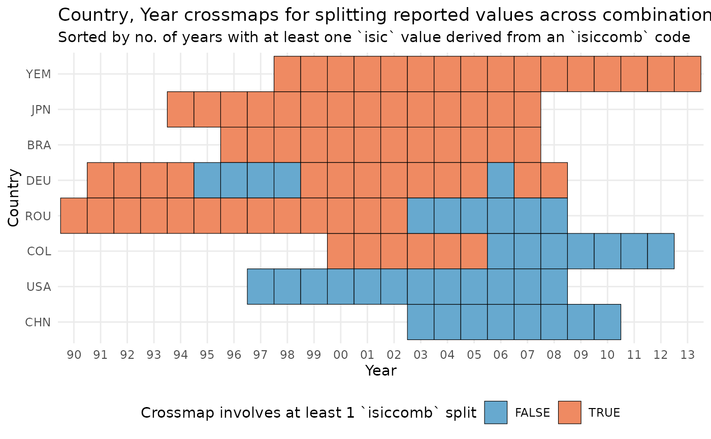
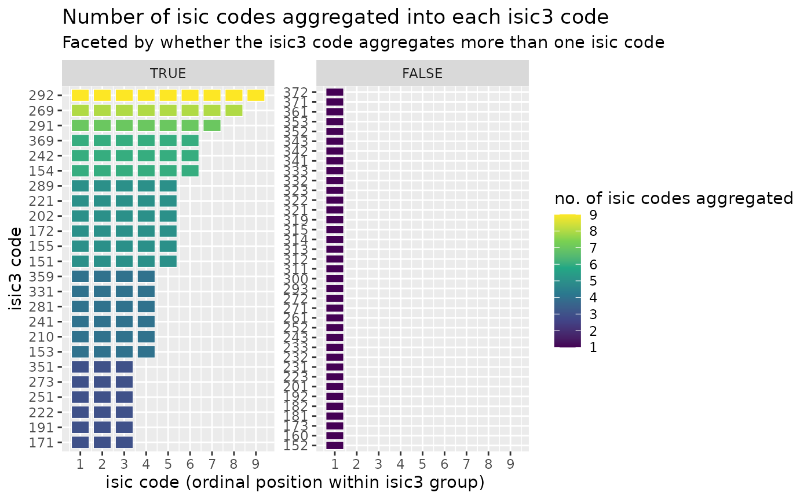

Composing Crossmap Sequences
Source:vignettes/examine-compose-crossmaps.Rmd
examine-compose-crossmaps.RmdPLACEHOLDER: Re-extraction
split_isiccomb <- function(threefour_df) {
interim <- list()
interim$isiccomb.rows <-
threefour_df |>
filter(str_detect(isiccomb, "[:alpha:]"))
interim$isiccomb.avg <-
interim$isiccomb.rows |>
group_by(country, year, isiccomb) |>
mutate(value = tidyr::replace_na(value, 0)) |>
summarise(
avg.value = mean(value),
n_isic = n_distinct(isic),
n_rows = n(),
.groups = "drop"
)
left_join(
threefour_df,
interim$isiccomb.avg,
by = c("country", "year", "isiccomb")
) |>
rename(value.nosplit = value) |>
mutate(
value = coalesce(avg.value, value.nosplit),
split.isiccomb = !is.na(avg.value)
) |>
select(country, year, isic, isiccomb, value, value.nosplit, split.isiccomb)
}
split_links <- indstat$masked_sample |>
split_isiccomb() |>
mutate(weights = value / 1000) |>
tidyr::drop_na(weights)As in vignette("extract-validate-existing"), we can
confirm every country/year group’s links form
a valid crossmap with validate_as_xmap():
crossmaps <- split_links |>
nest_by(country, year, .key = "links") |>
mutate(
valid = validate_as_xmap(links, isiccomb, isic, weights),
xmap = list(as_xmap_tbl(links, isiccomb, isic, weights))
) |>
ungroup()
crossmaps |>
count(valid)
#> # A tibble: 1 × 2
#> valid n
#> <lgl> <int>
#> 1 TRUE 112Block-Level Imputation
The crossmaps framework addresses block-level transformation and
imputation, whereby instead of modifying rows of data, we treat the
collection of code-value pairs for a larger grouping entity as a single
observation. For example, the isiccomb code-value pairs in
vignette("extract-validate-existing") are parts of the
overall aggregate output measure reported for a given country, year. The
extracted isiccomb to isic mapping is then a
describe how to impute country, year output measures by
isic codes from the reported isiccomb
observations. The separation of this logic into a standalone object, the
crossmap, allows for the imputation to be examined in more granular
detail compared to bespoke scripts. This vignette illustrates some of
the additional insights that can be derived from analysing
crossmaps.
We begin with the collection of extracted country, year
isiccomb to isic crossmaps from
vignette("extract-validate-existing"). In that vignette, we
confirmed that the extracted weights formed valid crossmaps,
guaranteeing that the transformations preserved the overall total value.
However, this does not provide much insight into how different country,
year observations are transformed. In particular, not every country,
year observation will be imputed, many observations are already reported
directly in isic categories. To understand how much of the
larger dataset and which country, year observation blocks require
imputation, we can examine properties of the crossmaps directly. To
begin, we might look at the distribution of weight types (unit, or
fraction) for each country, year:
weight_type <- crossmaps |>
select(country, year, links) |>
tidyr::unnest(links) |>
dplyr::left_join(
indstat$country_lookup[c("code", "iso3c", "name")],
by = join_by(country == code)
) |>
rename(country_iso3c = "iso3c") |>
mutate(weight_type = ifelse(weights == 1, "unit", "frac"))
weight_type |>
ggplot(aes(x = year, fill = weight_type)) +
facet_wrap(~country_iso3c) +
geom_bar(position = "stack") +
scale_fill_manual(values = c("frac" = "#ef8a62", "unit" = "#67a9cf")) +
theme_minimal() +
theme(legend.position = "bottom") +
labs(y = "`isic` codes", x = "Year", fill = "Weight type")
The chart above shows us that for most country, year observations,
fractional or splits affect relatively few imputed isic
code-value pairs, with most values already directly reported in
isic codes. Notice that for most country, years, combined
reporting only affects a small number of final isic. Both
USA and China (CHN) always reported directly in the isic
classification, while Germany (DEU) mostly reported combined
isiccomb values over a subset of isic values
up from 1991 to 1994 inclusive. Yemen (YEM) is the conspicuous
exception, where fractional weights dominate. We can summarise this in a
fraction measuring how many isic code-value pairs are
derived from splitting isiccomb values:
group_summary <- weight_type |>
summarise(
any_isiccomb = any(weight_type == "frac"),
pct_isiccomb = sum(weight_type == "frac") / n(),
.by = c(country_iso3c, year)
) |>
mutate(pct_year_isiccomb = sum(any_isiccomb) / n(), .by = c(country_iso3c))
group_summary |>
ggplot(aes(
x = as.factor(year),
fill = pct_isiccomb,
y = forcats::fct_reorder(country_iso3c, pct_year_isiccomb)
)) +
geom_tile(color = "black") +
## abbreviate year labels
scale_x_discrete(labels = ~ str_sub(.x, -2)) +
scale_fill_stepsn(
colours = c("white", RColorBrewer::brewer.pal(6, "Oranges")),
breaks = c(0.0001, seq(0.2, 1, 0.2)),
limits = c(0, 1),
labels = scales::label_number(accuracy = 0.01)
) +
# theme_minimal() +
# move legend to bottom
theme(legend.position = "bottom") +
labs(
x = "Year",
y = "Country",
fill = "Fraction of `isic` derived from `isiccomb` split",
title = "Country, Year crossmaps for splitting reported values across combinations of ISIC Rev. 3 codes",
subtitle = "Sorted by no. of years with at least one `isic` value derived from an `isiccomb` code"
)
We can also create a binary indicator any_isiccomb for a
more coarse-grain overview of which country, year have output values
that are redistributed from an actual reported observation under a
isiccomb code. This gives an overview of which parts of the
harmonised isic dataset have some degree of imputation
(orange tiles), and which remain unmodified from the reported values
(blue tiles).
group_summary |>
ggplot(aes(
x = as.factor(year),
y = forcats::fct_reorder(country_iso3c, pct_year_isiccomb),
fill = any_isiccomb
)) +
geom_tile(color = "black") +
scale_x_discrete(labels = ~ str_sub(.x, -2)) +
scale_fill_manual(values = c("TRUE" = "#ef8a62", "FALSE" = "#67a9cf")) +
theme_minimal() +
theme(legend.position = "bottom") +
labs(
x = "Year",
y = "Country",
fill = "Crossmap involves at least 1 `isiccomb` split",
title = "Country, Year crossmaps for splitting reported values across combinations of ISIC Rev. 3 codes",
subtitle = "Sorted by no. of years with at least one `isic` value derived from an `isiccomb` code"
)
Hierarchical classifcations: Composing to coarser classes
The International Standard Industrial Classification is a strictly
hierarchical classification system, whereby each code belongs to one of
four nested levels: a 1-letter section, a 2-digit division, a 3-digit
group, and a 4-digit class. A class’s first three digits give its group
parent, and (since indstat only reports at 3- or 4-digit
granularity) isic codes in this dataset are either groups
or classes.
Imagine that for analysis purposes we decide on using the 3-digit
view of the data. we could easily derive this by calculating the
variable isic3 = str_sub(isic, 1, 3) and summarising the
4-digit values within each three digit group with a sum()
operation. However, instantiating this aggregation as an explicit
crossmap, surfaces some structure in the data that the more efficient
aggregation would hide. To illustrate the additional insights we gain,
we first create the isic -> isic3 crossmap with
as_xmap_tbl(), which also (trivially) validates the links.
Unlike isiccomb -> isic – it doesn’t vary by
country or year:
(isic3_xmap <- split_links |>
distinct(isic) |>
mutate(isic = as.character(isic), isic3 = str_sub(isic, 1, 3), weight = 1) |>
as_xmap_tbl(from = isic, to = isic3, weight_by = weight))
#> # A crossmap tibble: 151 × 3
#> # with unique keys: [151] isic -> [61] isic3
#> .from$isic .to$isic3 .weight_by$weight
#> <chr> <chr> <dbl>
#> 1 151 151 1
#> 2 1520 152 1
#> 3 153 153 1
#> 4 154 154 1
#> 5 155 155 1
#> 6 1600 160 1
#> 7 171 171 1
#> 8 172 172 1
#> 9 1730 173 1
#> 10 1810 181 1
#> # ℹ 141 more linksThe resulting crossmap isic3_xmap takes 151
isic 3 and 4 digit codes and maps them to 61
isic3 3-digit codes. Given that the target set
.to$isic3 is smaller than the source set
.from$isic, there must be some aggregation, but how much
aggregation is unclear. For example, 1520 is a 4-digit
class, but the 0 end digit actually indicates that division
152 is not further decomposed. In ISIC the ending digits
1-9 are used to label legitimate 4-digit sub-classes. This
means that the value of 152 is the same as
1520. However, 1520 could be a partial value
split from a larger isiccomb code.
To gain an overview of the relationship between ISIC three and four
digit classes, we can summarise the crossmap table further using similar
summary methods as in the Timor-Leste occupation codes example in
vignette("extract-validate-existing"):
(isic3_summary <- isic3_xmap |>
summarise(
`.from` = glue::glue_collapse(.from, "+"),
`n.from` = n(),
.by = c(.to)
) |>
arrange(desc(n.from)))
#> # A tibble: 61 × 3
#> .to$isic3 .from n.from
#> <chr> <glue> <int>
#> 1 292 c("292", "2921", "2922", "2923", "2924", "2925", "2926", "2… 9
#> 2 269 c("269", "2691", "2692", "2693", "2694", "2695", "2696", "2… 8
#> 3 291 c("291", "2911", "2912", "2913", "2914", "2915", "2919") 7
#> 4 154 c("154", "1541", "1542", "1543", "1544", "1549") 6
#> 5 242 c("242", "2421", "2422", "2423", "2424", "2429") 6
#> 6 369 c("369", "3691", "3692", "3693", "3694", "3699") 6
#> 7 151 c("151", "1511", "1512", "1513", "1514") 5
#> 8 155 c("155", "1551", "1552", "1553", "1554") 5
#> 9 172 c("172", "1721", "1722", "1723", "1729") 5
#> 10 202 c("202", "2021", "2022", "2023", "2029") 5
#> # ℹ 51 more rowsThe summary shows that for any given country, year observation with
four-digit data, the largest number of four-digit values that could be
aggregated is 9 values into the three-digit code 292. A
simple facetted heatmap shows the distribution more clearly:
isic3_agg <- isic3_summary |>
mutate(agg = n.from > 1)
isic3_agg |>
tidyr::uncount(n.from, .id = "unit", .remove = FALSE) |>
mutate(agg = forcats::fct_relevel(factor(agg), "TRUE", "FALSE")) |>
ggplot(aes(
y = forcats::fct_reorder(.to$isic3, n.from),
x = unit,
fill = n.from,
)) +
facet_wrap(vars(agg), scales = "free_y") +
geom_tile(width = 0.8, height = 0.8, color = "white") +
scale_x_continuous(breaks = scales::breaks_width(1)) +
scale_fill_viridis_c(breaks = scales::breaks_width(1)) + # + coord_equal()
labs(
x = "isic code (ordinal position within isic3 group)",
y = "isic3 code",
fill = "no. of isic codes aggregated",
title = "Number of isic codes aggregated into each isic3 code",
subtitle = "Faceted by whether the isic3 code aggregates more than one isic code"
)
Composing crossmap sequences: splitting then aggregating
Although it is useful to be able to summarise and visualise the
aggregation step with more granularity and specificity, we also want to
be able to obtain the final transformed and imputed country, year
observations. Crossmaps are defined on overlapping indexes are
composable. For example, if isiccomb->isic and
isic->isic3 can be collapsed to
isiccomb->isic3 so long as the two isic
code sets are identical.
We can use compose_xmap() to check for this overlap, and
collapse chains of transformations. This allows us to skip the
intermediate calculations and produce isiccomb -> isic3
directly – without ever materialising the intermediate
isiccomb-isic-level values:
isiccomb_to_isic3 <- split_links |>
mutate(isic = as.character(isic), isiccomb = as.character(isiccomb)) |>
nest_by(country, year, .key = "links") |>
mutate(
xmap1 = list(as_xmap_tbl(links, isiccomb, isic, weights)),
composed = list(tidyr::unpack(
compose_xmap(xmap1, isic3_xmap),
everything()
))
) |>
reframe(composed)
isiccomb_to_isic3 |>
filter(country == "276", year == 1991, isiccomb == "151A")
#> # A tibble: 5 × 5
#> country year isiccomb isic3 weight_by
#> <chr> <dbl> <chr> <chr> <dbl>
#> 1 276 1991 151A 151 0.2
#> 2 276 1991 151A 152 0.2
#> 3 276 1991 151A 153 0.2
#> 4 276 1991 151A 154 0.2
#> 5 276 1991 151A 155 0.2"151A" still lands 1/5 of its weight on each of
151, 152, 153, 154, 155 – 1520’s composed
weight rolls straight onto isic3 = 152 – the same picture a
two-step split-then-reaggregate would give, just arrived at
directly.
Applying the collapsed transformation
apply_xmap() transforms data against a single
xmap_tbl, but isiccomb_to_isic3 is a
collection of crossmaps – one per country, year. Applying it
means nesting the reported isiccomb-level values the same
way, then mapping apply_xmap() over each country, year
group with its own crossmap:
comb_values <- indstat$masked_sample |>
mutate(isiccomb = as.character(isiccomb)) |>
group_by(country, year, isiccomb) |>
summarise(value = value[!is.na(value)][1], .groups = "drop") |>
filter(!is.na(value))
direct_isic3 <- comb_values |>
nest_by(country, year, .key = "values") |>
mutate(
xmap_grp = list(
isiccomb_to_isic3 |>
filter(.data$country == .env$country, .data$year == .env$year) |>
as_xmap_tbl(isiccomb, isic3, weight_by)
),
applied = list(apply_xmap(
values,
xmap_grp,
values_from = value,
keys_from = isiccomb
))
) |>
reframe(applied)
direct_isic3
#> # A tibble: 6,375 × 4
#> country year isic3 value
#> <chr> <dbl> <chr> <dbl>
#> 1 076 1996 151 1000
#> 2 076 1996 152 1000
#> 3 076 1996 153 1000
#> 4 076 1996 154 1000
#> 5 076 1996 155 1000
#> 6 076 1996 160 1000
#> 7 076 1996 171 1000
#> 8 076 1996 172 1000
#> 9 076 1996 173 1000
#> 10 076 1996 181 500
#> # ℹ 6,365 more rowsWe can check this against the two-step route: take
split_links (which already ran
split_isiccomb() to split reported isiccomb
values down to isic), derive
isic3 = str_sub(isic, 1, 3), and sum value
within each country, year, isic3 group by hand. Composing
the crossmaps and applying them directly to the original
isiccomb-level values should reproduce the same 3-digit
totals as this manual split-then-reaggregate:
two_step_isic3 <- split_links |>
mutate(isic3 = str_sub(as.character(isic), 1, 3)) |>
group_by(country, year, isic3) |>
summarise(value_two_step = sum(value, na.rm = TRUE), .groups = "drop")
direct_isic3 |>
full_join(two_step_isic3, by = c("country", "year", "isic3")) |>
mutate(diff = value - value_two_step) |>
summarise(max_abs_diff = max(abs(diff), na.rm = TRUE))
#> # A tibble: 1 × 1
#> max_abs_diff
#> <dbl>
#> 1 0Limitations of composing xmap
Notice that max_abs_diff is not exactly 0 –
it’s on the order of 1e-13, far below anything that matters
for real data, but not literal floating-point equality either. That
residual is a direct symptom of a known limitation of composing weights
this way: each composed weight in isiccomb_to_isic3 is a
sum of products of the two input crossmaps’ weights, which amplifies
floating-point drift relative to either crossmap alone (and would
compound further across a longer Reduce()-chained
sequence), whereas the two-step route above only ever sums plain
values.
Two crossmaps that are each individually valid at the default
tolerance can compose into a result that narrowly fails that same
tolerance – worth knowing if compose_xmap() aborts on
validation with a sequence built from your own data; widening
tol on the call is the practical workaround. This is a
property of representing weights as plain floating-point numbers, not a
bug in the composition itself, and it’s exactly why
max_abs_diff above is reported as a small number to eyeball
rather than asserted to be identically 0.